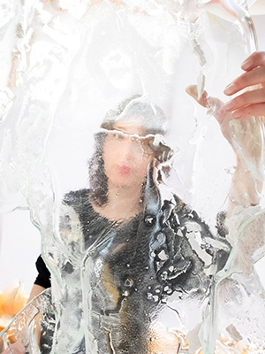

Inspiracją, punktem wyjścia, centralnym motywem mojej pracy jest świadomość rozdarć, jakim podlega nasze życie. Człowiek zmaga się w wewnętrznej walce.
Zadaję sobie pytanie, jak można pozostać wrażliwym w świecie zaawansowanej cywilizacji, tak mocno związanej z postawą konsumpcyjną, nacechowanej skrajną powierzchownością. Artysta, jako osoba wrażliwa, a nawet nadwrażliwa, chcąc tworzyć i przetrwać we współczesnym świecie, musi odznaczać się „grubą skórą”, czyli powinien posiadać dwie cechy osobowości daleko od siebie odbiegające. Staram się wyjaśnić, jakie warunki, predyspozycje kierują człowiekiem, dzięki czemu może stać się artystą... i zaczyna tworzyć, co ma na to wpływ, jaka determinacja nim kieruje i co skłania go do „walki”.
W pracy artysty nie ma stanów i rozwiązań zamkniętych i ostatecznych, zarówno w samym twórcy, jak i w rzeczywistości, ku której on się kieruje poprzez swe dzieło. W mojej pracy stosuję dwa rodzaje materiałów, szkło i metal, dwie tak różne materie; porównuję je do dwóch cech osobowości. Gdy patrzymy przez szkło, zniekształca się, a raczej przekształca się obraz postaci. Deformacje w mojej pracy są odpowiednikiem procesów, którym podlega człowiek, przekształceń, przeobrażeń. Toczącej się w nim walki. Pęknięcia, deformacje łamią człowieka, jednocześnie go budując.
Doświadczenia nas zmieniają, odciskają swoje piętno w nas samych, a także w rzeczywistości przez nas odbieranej. Chcę przedstawić trudny do zrozumienia paradoks w samej istocie artysty, poprzez opozycję materii chcę ujawnić antynomiczność ludzkiej egzystencji.
Artysta, walcząc z racjonalnością świata, decyduje się na alogiczność własnej świadomości, przez co odbierany jest jako odmienny. Podczas poszukiwań zmaga się z tymi odmiennymi światami, próbując je razem połączyć. Twórczość i urojenia wywodzą się ze strefy cienia, artysta i twórca urojeń są sobie bliscy w jaskrawości przeżyć, w potrzebie wykreowania całkowicie nowej rzeczywistości. Jest to świat odmienny od każdego innego, ich własny, możemy go zobaczyć poprzez dzieło, dotrzeć do obiektów, miejsc dla nas nieznanych.